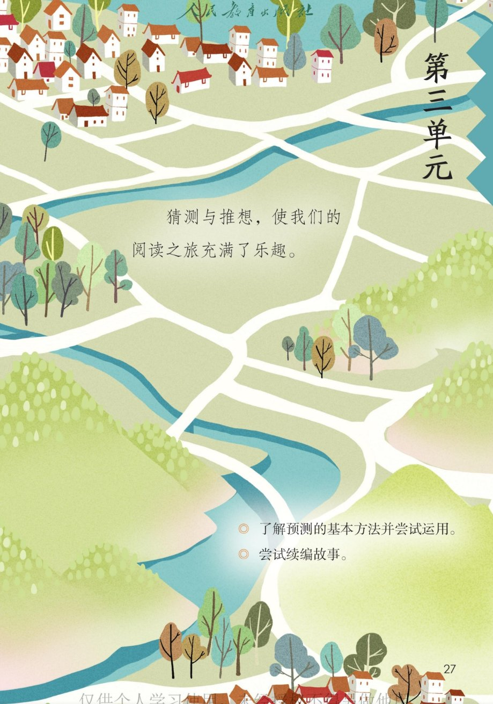
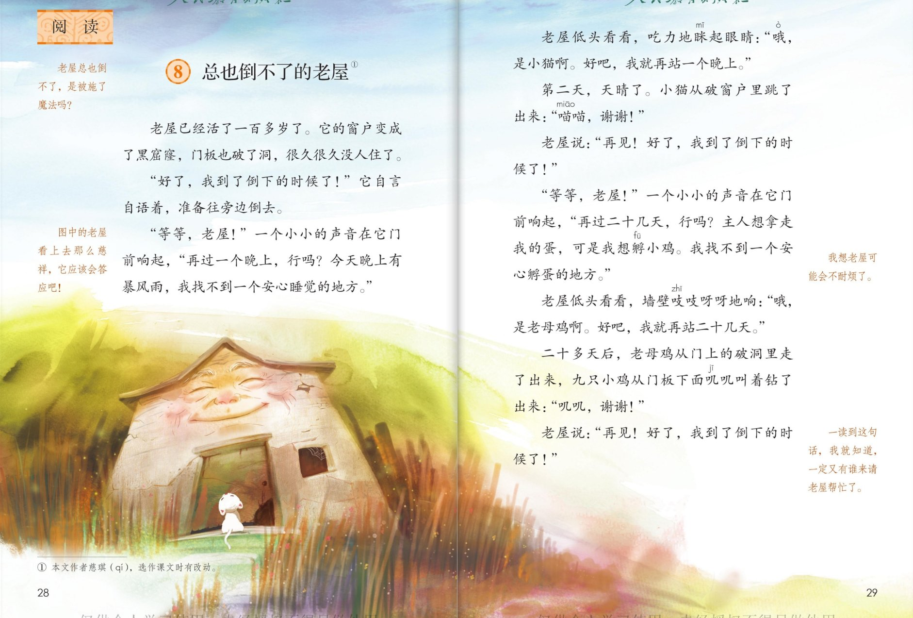
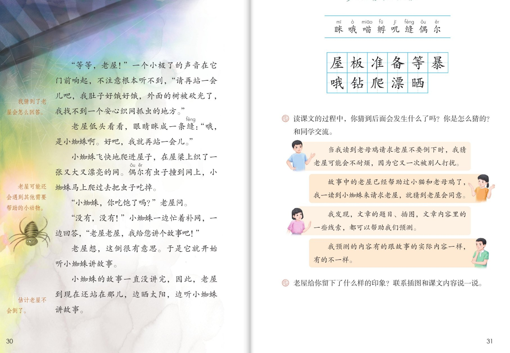

×
🔊 手机听不到声音怎么办？
① 先把手机
媒体音量调大 ，确认没开静音、没连蓝牙耳机；在微信里打开的，点右上角「⋯ → 用浏览器打开」。
② 还是没声音？到应用商店免费下载
Microsoft Edge 浏览器 （它自带朗读发声），用它打开本页面就能出声。
③ 换了 Edge 仍然没声音，说明这部手机的
硬件/系统不支持 网页朗读（多为老旧机型）；近几年买的新手机一般都能正常播放。
→ 打开声音自检
🏚 第 8 课《总也倒不了的老屋》· 有声图文带读
统编版语文 · 第三单元·阅读 · 课本 P27~31 · 作者：慈琪 · 素养升级版（对标 2022 课标第二学段）
课文 17 个自然段
素养目标 4
会认字 8
会写字 11
听写词 12
教材旁批 7 处
深入理解 8 题
本课本领 一边读一边预测
🎧 这样学（可随时点任意一句、一个字、一个词单独听）： ① 听读课文 ——一句一句读，读到哪一句哪一句发光；一边读一边猜后面会发生什么。② 学字词 ——8 个会认字、11 个会写字，点一个读一个。③ 词语·听写 ——听写 12 个课文词（读两遍→你写→报答案→听示范句），再听 4 组近义词辨析。④ 深入理解 ——8 道题（认知 / 理解 / 运用 / 拓展），先想后看。⑤ 分角色朗读 ——旁白、老屋、小猫、老母鸡、小蜘蛛，读出老屋的慈祥温和。🌟 本课特别任务：教材旁批 7 处示范了怎么预测——跟着课文学预测！
📌 本单元语文要素 ——阅读：预测 。单元导语（P27 照录）：猜测与推想，使我们的阅读之旅充满了乐趣 ；要点：了解预测的基本方法并尝试运用 ；尝试续编故事 。
🀄 文化自信
🀄 文化自信
体会老屋乐于助人、信守承诺的美德，懂得帮助别人是温暖的事。
🗣 语言运用
🗣 语言运用
认识 8 个生字，会写 11 个字；积累“安心、偶尔、自言自语”等词语和“……，行吗”的请求句式。
💡 思维能力
💡 思维能力
一边读一边预测：找题目、插图、内容里的线索，作出猜测并对照课文验证。
🎨 审美创造
🎨 审美创造
边读边想象老屋和小动物的画面，试着续编故事，体验创造的乐趣。
点段前的 ①②③ 听整段
🔁 跟读模式：关
👁 隐藏注音（自测用）
字卡上的拼音标的是本课要认的字，读音来自课本生字表
🎤 朗读要求（老师标准） 不添字、不漏字 ；不出声、不指读 ，一边读一边预测 ；恳切 ，老屋的话读得慈祥、温和 ；猜一猜 ，再验证自己的猜测。
🤫 默读小提示（边默读边预测） 听读 ——点句子听老师读；第二步 默读 ——不出声、不指读，读到关键处停下来猜一猜 ：后面会发生什么；第三步 验证 ——接着读，看看猜得对不对，猜错了也没关系。
①
老屋已经活了一百多岁了。
它的窗户变成了黑窟窿，门板也破了洞。
它很久很久没人住了。
📌 这一段讲：老屋一百多岁了，破了洞、很久没人住。
②
“好了，我到了倒下的时候了！”它自言自语着，准备往旁边移去。
📌 这一段讲：老屋自言自语：到了倒下的时候了。
③
“等等，老屋！”
一个小小的声音在它门前响起，“再过一个晚上，行吗？
今天晚上有暴风雨，我找不到一个安心睡觉的地方。”
📌 这一段讲：小猫请求：暴风雨夜，找一个安心睡觉的地方。
④
老屋低头看看，吃力地眯起眼睛：“哦，是小猫啊。
好吧，我就再站一个晚上。”
📌 这一段讲：老屋答应小猫：再站一个晚上。
⑤
第二天，天晴了。
小猫从破窗户里跳了出来：“喵喵，谢谢！”
📌 这一段讲：天晴了，小猫道谢离开。
⑥
老屋说：“再见！好了，我到了倒下的时候了！”
📌 这一段讲：老屋又说：到了倒下的时候了。
⑦
“等等，老屋！”
一个小小的声音在它门前响起，“再过二十几天，行吗？
主人想拿走我的蛋，可是我想孵小鸡。
我找不到一个安心孵蛋的地方。”
📌 这一段讲：老母鸡请求：想孵小鸡，找一个安心孵蛋的地方。
⑧
老屋低头看看，墙壁吱吱呀呀地响：“哦，是老母鸡啊。
好吧，我就再站二十几天。”
📌 这一段讲：老屋答应老母鸡：再站二十几天。
⑨
二十多天后，老母鸡从门上的破洞里走了出来，九只小鸡从门板下面叽叽叫着钻了出来：“叽叽，谢谢！”
📌 这一段讲：小鸡孵出来了，叽叽叫着道谢。
⑩
老屋说：“再见！好了，我到了倒下的时候了！”
📌 这一段讲：老屋第三次说：到了倒下的时候了。
⑪
“等等，老屋！”
一个小极了的声音在它门前响起，不注意根本听不到，“请再站一会儿吧，我肚子好饿好饿，外面的树被砍光了，我找不到一个安心织网抓虫的地方。”
📌 这一段讲：小蜘蛛请求：找一个安心织网抓虫的地方。
⑫
老屋低头看看，眼睛眯成一条缝：“哦，是小蜘蛛啊。
好吧，我就再站一会儿。”
📌 这一段讲：老屋答应小蜘蛛：再站一会儿。
⑬
小蜘蛛飞快地爬进屋子，在屋檐上织了一张又大又漂亮的网。
偶尔有虫子撞到网上，小蜘蛛马上爬过去把虫子吃掉。
📌 这一段讲：小蜘蛛织了一张又大又漂亮的网，安了家。
⑭
“小蜘蛛，你吃饱了吗？”老屋问。
📌 这一段讲：老屋问小蜘蛛：你吃饱了吗。
⑮
“没有，没有！”
小蜘蛛一边忙着补网，一边回答，“老屋老屋，我给您讲个故事吧！”
📌 这一段讲：小蜘蛛要给老屋讲故事。
⑯
老屋想，这倒很有意思。
于是它就开始听小蜘蛛讲故事。
📌 这一段讲：老屋觉得有意思，开始听小蜘蛛讲故事。
⑰
小蜘蛛的故事一直没讲完，因此，老屋到现在还站在那儿，边晒太阳，边听小蜘蛛讲故事。
📌 这一段讲：故事一直没讲完，老屋到现在还站在那儿——总也倒不了。
🤔 想一想（点我可跳过）
双页宽图自动占整行

第 27 页 · 单元导语

第 28~29 页 · 课文（上）

第 30~31 页 · 课文（下）· 课后练习
📖 人教版《语文》三年级上册 · 课本第 27~31 页 · 图片仅供个人学习，版权归人民教育出版社所有
📚 注释① 本文作者慈琪 ，选作课文时有改动。
点一个字，听读音、词语和在课文里的句子
结构、部首、笔画与书写提示为通用规范，供参考，以教材和老师的指导为准
屋wū
屋子
半包围 · 尸 · 9画
尸字头要写大，撇画舒展，罩住里面的至字。
板bǎn
门板
左右 · 木 · 8画
木字旁捺变点，右边反文旁撇横撇捺要舒展。
准zhǔn
准备
左右 · 冫 · 10画
两点水靠上，右边隹字四横等距，竖画写正。
备bèi
准备
上下 · 夂 · 8画
上面折文旁撇捺舒展，盖住下面的田字，田字写扁。
等děng
等一等
上下 · 竹 · 12画
竹字头两边匀称，下面寺字横画间距均匀。
暴bào
暴风雨
上下 · 日 · 14画
上面日字写扁，中间共字托住，下面是水字变形，别写错。
哦ò
哦，是小猫啊
左右 · 口 · 10画
口字旁写小偏上，右边我字斜钩要写得有力。
钻zuān
钻出
左右 · 钅 · 10画
金字旁写窄，右边占字上横写短，口字写扁。多音字：钻研读第一声，钻石读第四声。
爬pá
爬进
半包围 · 爪 · 8画
爪字头要写平，捺画伸长，托住里面的巴字。
漂piào
漂亮
左右 · 氵 · 14画
三点水弧形排列，右边票字上扁下稳。多音字：漂浮读第一声，漂亮读第三声。
晒shài
晒太阳
左右 · 日 · 10画
日字旁写窄，右边西字横平竖正，笔画均匀。
点一行，听读这一组词语
屋 屋子 房屋 屋檐
准 准备 准时 标准
暴 暴风雨 暴风 暴雨
晒 晒太阳 晒干 晾晒
读两遍 → 你在纸上写 → 报答案 → 听示范句
准备听写 · 共 12 个词
○ ○ ○
点下面的「开始听写」，听到一个词就写一个词。
▶ 开始听写
🔁 再读一遍
👁 看答案
点词听读，点句子听示范句，再自己说一句
1 变成 课文词
示范句：它的窗户变成了黑窟窿。
✏️ 我也能说：什么变成了什么。
2 门板 课文词
示范句：门板也破了洞。
✏️ 我也能说：什么破了洞。
3 准备 课文词
示范句：它准备往旁边移去。
✏️ 我也能说：谁准备做什么。
4 暴风雨 课文词
示范句：今天晚上有暴风雨。
✏️ 我也能说：什么时候有暴风雨。
5 安心 课文词
示范句：我找不到一个安心睡觉的地方。
✏️ 我也能说：谁找不到安心的地方。
6 自言自语 课文词
示范句：它自言自语着。
✏️ 我也能说：谁自言自语着什么。
7 钻出 课文词
示范句：九只小鸡从门板下面钻了出来。
✏️ 我也能说：谁从哪里钻出来。
8 爬进 课文词
示范句：小蜘蛛飞快地爬进屋子。
✏️ 我也能说：谁爬进哪里。
9 漂亮 课文词
示范句：织了一张又大又漂亮的网。
✏️ 我也能说：织了一张什么样的网。
10 晒太阳 课文词
示范句：老屋边晒太阳边听故事。
✏️ 我也能说：谁边晒太阳边做什么。
11 屋檐 课文词
示范句：小蜘蛛在屋檐上织网。
✏️ 我也能说：谁在哪里织网。
12 孵蛋 课文词
示范句：我想孵小鸡，找不到安心孵蛋的地方。
✏️ 我也能说：谁想孵蛋。
相同点 / 不一样在哪 / 各造一句
安心 — 放心
相同：都表示心里安稳、不担心。
不一样：安心 偏重安稳、安定（安心睡觉）；放心 偏重没有牵挂。
安心：我找不到一个安心睡觉的地方。
飞快 — 迅速
相同：都表示速度很快。
不一样：飞快 更形象，像飞一样；迅速 更书面。
飞快：小蜘蛛飞快地爬进屋子。
慈祥 — 慈爱
相同：都表示态度亲切、温和。
不一样：慈祥 多形容老人的神态；慈爱 偏重带着爱的感情。
慈祥：图中的老屋看上去那么慈祥。
估计 — 大概
相同：都表示大致的推测。
不一样：估计 是动词，可以带出推断的内容；大概 还可作副词。
估计：估计老屋不会倒了。
自言自语 自言自语 自由自在 自高自大
好×好× 好饿好饿 好大好大 好久好久
请求句式 ……，行吗？ 请再站一会儿吧
拟声词 喵喵 叽叽 吱吱呀呀
点一张卡，听这条旁批怎么预测
课文的页边有 7 条旁批 ，是一位小读者一边读一边预测 的心里话。猜一猜、读一读：预测从题目 开始，用插图 帮忙，靠线索 验证。
💭 旁批一（P28）
“老屋总是倒不了，到底施了魔法吗？” ▸ 读题目时产生的疑问——预测从题目就开始了。
🖼 旁批二（P28）
“图中的老屋看上去那么慈祥，它应该会答应吧！” ▸ 看插图预测——插图也是线索。
🤔 旁批三（P29）
“我想老屋可能会不耐烦了。” ▸ 联系前文预测——老屋已经被打扰过一次了。
📖 旁批四（P29）
“一读到这句话，我就知道，一定又有谁请老屋帮忙了。” ▸ 抓重复的句式预测——等等，老屋！又来了。
💡 旁批五（P30）
“我猜到了老屋会怎么回答。” ▸ 对照课文验证猜测——果然还是那句好吧。
➡️ 旁批六（P30）
“老屋可能还会遇到其他需要帮助的小动物。” ▸ 顺着故事规律预测——还会有谁来呢。
🏁 旁批七（P30）
“估计老屋不会倒了。” ▸ 对结局作出估计——越读越有把握。
这四位同学是怎么猜的？听听他们的思路
👦 示范气泡一
当我读到老母鸡请求老屋不要倒下时，我猜老屋可能会不耐烦，因为它又一次被别人打扰。
👧 示范气泡二
故事中的老屋已经帮助过小猫和老母鸡了，我一读到小蜘蛛来请求老屋，就猜到老屋会同意。
🧒 示范气泡三
我发现，文章的题目、插图，文章内容里的一些线索，都可以帮助我们预测。
👦 示范气泡四
我预测的内容有的跟故事的实际内容一样，有的不一样。
标「答案不唯一」的题，说得有道理都对
认知 单元导语给这个单元定了什么任务？看解析
🤔 想一想
解析：
猜测与推想，使我们的阅读之旅充满了乐趣——了解预测的基本方法并尝试运用；尝试续编故事。
🌈 答案不唯一，说得有道理都对
认知 课文讲了一件什么事？看解析
🤔 想一想
解析：
老屋想倒下，小猫、老母鸡、小蜘蛛先后来请求帮助，老屋一次次答应，到现在还站在那儿——总也倒不了。
🌈 答案不唯一，说得有道理都对
理解 小猫、老母鸡、小蜘蛛的请求有什么相同和不同？看解析
🤔 想一想
解析：
相同：都是等等老屋，都找不到一个安心的地方；不同：时间一个晚上、二十几天、一会儿，一次比一次短。🌈 说出自己的发现就对。
🌈 答案不唯一，说得有道理都对
理解 题目、插图和重复的句式，怎么帮我们预测？看解析
🤔 想一想
解析：
题目让人猜：为什么总也倒不了；插图让人猜：老屋慈祥，会答应；一读到等等，老屋就知道又有谁来请求了。🌈 答案不唯一。
🌈 答案不唯一，说得有道理都对
理解 老屋给你留下了什么样的印象？（课后题③）看解析
🤔 想一想
解析：
慈祥、热心、乐于助人——一次又一次答应小动物，自己想倒下却总把别人放在前面。🌈 联系插图和内容说出印象就对。
🌈 答案不唯一，说得有道理都对
运用 读课文时你猜到了什么？你是怎么猜的？看解析
🤔 想一想
解析：
示范：我猜到老屋会答应，因为前两次它都答应了。🌈 参考教材示范气泡，说出自己的猜测和依据就很好。
🌈 答案不唯一，说得有道理都对
运用 老屋可能还会遇到谁来请求？学着课文的样子说一说。看解析
🤔 想一想
解析：
示范：等等，老屋！小画眉说，我的家被风吹跑了，我找不到一个安心唱歌的地方。🌈 答案不唯一。
🌈 答案不唯一，说得有道理都对
拓展 故事的结尾是老屋还站着，你觉得后面还会发生什么？试着续编一小段。看解析
🤔 想一想
解析：
示范：小蜘蛛的故事终于讲完了，一只小刺猬又敲门了……🌈 答案不唯一，顺着故事的规律续编就行——这正是本单元要学的本领。
🌈 答案不唯一，说得有道理都对
💬 预测支架：先 老屋想倒下 → 再 小猫请求站一晚 → 接着 老母鸡请求站二十几天 → 然后 小蜘蛛请求并讲故事 → 最后 总也倒不了。下次再有谁来，你猜老屋会怎样？
点一个角色，听他（她）的台词
🎭 旁白
老屋已经活了一百多岁了。它的窗户变成了黑窟窿，门板也破了洞。它很久很久没人住了。它自言自语着，准备往旁边移去。 / 第二天，天晴了。二十多天后，老母鸡带着九只小鸡走了出来。小蜘蛛飞快地爬进屋子，织了一张又大又漂亮的网。
💬 要读出人物语气 ：老屋慈祥温和，小动物们恳切有礼貌
🎭 老屋
好了，我到了倒下的时候了！ / 老屋低头看看，吃力地眯起眼睛：哦，是小猫啊。好吧，我就再站一个晚上。 / 老屋低头看看，墙壁吱吱呀呀地响：哦，是老母鸡啊。好吧，我就再站二十几天。 / 老屋低头看看，眼睛眯成一条缝：哦，是小蜘蛛啊。好吧，我就再站一会儿。 / 小蜘蛛，你吃饱了吗？老屋想，这倒很有意思，于是它就开始听小蜘蛛讲故事。
💬 要读出人物语气 ：老屋慈祥温和，小动物们恳切有礼貌
🎭 小猫
等等，老屋！再过一个晚上，行吗？今天晚上有暴风雨，我找不到一个安心睡觉的地方。 / 小猫从破窗户里跳了出来：喵喵，谢谢！
💬 要读出人物语气 ：老屋慈祥温和，小动物们恳切有礼貌
🎭 老母鸡
等等，老屋！再过二十几天，行吗？主人想拿走我的蛋，可是我想孵小鸡。我找不到一个安心孵蛋的地方。 / 叽叽，谢谢！
💬 要读出人物语气 ：老屋慈祥温和，小动物们恳切有礼貌
🎭 小蜘蛛
等等，老屋！请再站一会儿吧，我肚子好饿好饿，外面的树被砍光了，我找不到一个安心织网抓虫的地方。 / 没有，没有！老屋老屋，我给您讲个故事吧！ / 小蜘蛛的故事一直没讲完，因此，老屋到现在还站在那儿，边晒太阳，边听小蜘蛛讲故事。
💬 要读出人物语气 ：老屋慈祥温和，小动物们恳切有礼貌
每题给自己打 1~3 颗星
1. 我能正确认读 8 个会认字，规范书写 11 个会写字。 ☆ ☆ ☆
2. 我能一边读一边预测，说出自己猜了什么、怎么猜的。 ☆ ☆ ☆
3. 我能找到帮助预测的线索：题目、插图、内容里的细节。 ☆ ☆ ☆
4. 我能对照课文验证预测，猜错了也知道为什么。 ☆ ☆ ☆
5. 我能联系插图和课文内容，说出老屋给我的印象。 ☆ ☆ ☆
✍️ 小练笔 ：谁来请求 呢？学着课文的样子续编一小段 。例 ：等等，老屋！小画眉说，我的家被风吹跑了，我找不到一个安心唱歌 的地方。老屋低头看看：好吧，我就再站一会儿。等等，老屋 和……，行吗 这样的句式，写下你预测的故事。